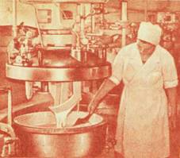

Плавленые сыры

Плавленый сыр — продукт сравнительно новый. Начало производства его принято относить к 1911 г., когда он впервые был выработан в швейцарском городе Тун.
В СССР производство плавленого сыра было организовано в 30-х годах, сначала на Московском, затем на Ленинградском и Ростовском заводах. В те годы выработка его была незначительной, но она быстро росла и в 1982 г. превысила 217 тыс. т, а это немногим меньше трети всего производства сыра в стране.
Такой рост выпуска плавленого сыра объясняется тем, что он пришелся по вкусу миллионам потребителей.
Пройдем еще раз по нашей выставке. Стенды с плавленым сыром, где представлено более 40 видов его, привлекают внимание разнообразием экспонатов и обилием красок. Бруски, секторы сыра в блестящей фольге, белые коробочки из полистирола, жестяные банки, картонные коробки с наборами, сыр в виде больших колбас.
Приглядевшись к ярким этикеткам, обращаешь внимание на разнообразие жирности плавленых сыров. По этому показателю они разделяются на сливочные (60 % жира), жирные (40, 45, 50 и 55 % жира) и полужирные (30 и 20 % жира). Дегустация позволяет сделать вывод о широкой вкусовой гамме их, различной консистенции и цвете.
Высококачественные молочные продукты — сычужные жирные и нежирные сыры, брынза, творог, сливочное масло, а также сметана, сухое молоко, сухие и свежие сливки — вот основное сырье для выработки плавленых сыров. Но при этом шире, чем при производстве любого другого молочного продукта, используются вкусовые добавки — продукты моря и мясные копчености, грибы, какао и кофе, сахар, а также пряности и специи — перец и гвоздика, тмин, лук, томат и др. Отсюда и широта вкусового диапазона плавленых сыров — от острого до сладкого, и разнообразие их цвета — от слегка кремового до оранжевого, зеленоватого.
Любым потребительским требованиям удовлетворяет и консистенция — от плотной, когда сыр можно нарезать кусочками, до кремобразной, позволяющей намазывать его на хлеб, как масло. Плавленые сыры не разделяются на сорта.

В этих котлах готовится плавленый сыр
Хотя специальный раздел книги посвящен пищевой ценности сыра, здесь уместно сказать несколько слов на эту тему, учитывая своеобразные свойства плавленого сыра.
Плавленый сыр содержит до 24 % белков, до 27 % жира, различные соли, жиро — и водорастворимые витамины и микроэлементы (цифры приведены в расчете на сухие вещества сыра). Белков и жира в плавленом сыре немного меньше, чем в сычужном. Белки в этом сыре в основном молочные, в отдельных видах его имеются также мясные и рыбные белки, которые вводятся с вкусовыми добавками. Но дело не только в количестве белков, но и в их качестве. Белки плавленого сыра усваиваются полностью, как яичный белок.
Плавленый сыр — источник витаминов А и группы В. Плавление при сравнительно невысокой температуре не вызывает разрушения витаминов сырья. Кроме того, в этот сыр можно вводить дополнительное количество витаминов, а также обогащать его другими веществами, повышающими диетические свойства и питательность продукта.
Частицы жира в плавленом сыре намного мельче, чем в сычужном, что повышает его усвояемость.
Производство плавленых сыров своеобразно и не имеет ничего общего с описанным в разделе «О том, что когда-то было секретом». Кратко остановимся на этом.
Процесс производства на заводе плавленых сыров начинается с подготовки для плавления молочных продуктов. Очищенный от корки сычужный сыр измельчают, благодаря чему он плавится быстро и равномерно. Измельченные сыр, брынзу загружают в плавильные котлы, сюда же вводят сливочное масло, специальные соли, которые улучшают плавление, вкусовые добавки — все, что нужно по рецептуре. При температуре 75–95 °C происходит быстрое плавление, что способствует сохранению вкусовых свойств исходного сыра, и одновременно пастеризация. Примерно через 20–25 мин из котла выпускают расплавленную, похожую на густой мед сырную массу.
Что происходит с ней дальше? Она поступает в бункер фасовочного автомата. Сформованный в гнезде вращающегося круглого стола автомата пакет из фольги подводится под дозатор и наполняется сырной массой. Еще поворот стола — и на пакет опускается листок фольги, который становится как бы его крышкой. Специальный механизм мягко ударяет по пакету, подпрессовывая его, и через несколько мгновений он выталкивается на транспортер.
В автомате же особый механизм незаметно для глаза наклеивает на фольгу этикетку. Значительная часть плавленых сыров выпускается в фольге с напечатанной на ней этикеткой.
Плавленый сыр еще очень мягок, пакет можно легко сжать пальцами. Соответствующую плотность он приобретает после охлаждения.
…Разгружается один из плавильных котлов. Выпускаемая из него масса не желтого цвета, а темно-коричневого. Это шоколадный сыр.
Шоколадная масса также попадает в бункер фасовочного автомата. Однако на конвейере оказывается не прямоугольные, а треугольные бруски сыра массой 30 г. Готовится набор для «Ассорти». В красиво оформленных коробках — треугольные брусочки плавленого сыра различных видов, в том числе и шоколадный.
Проходим дальше. Работницы укладывают в ящик небольшие жестяные банки с этикеткой. Рядом полуавтомат фасует расплавленную, приготовленную из высококачественного сыра массу. На закаточной машине банки герметически закрываются крышками и затем выдерживаются при температуре пастеризации. В этих банках по 100 или 250 г пастеризованного сыра.
На транспортере белые полистироловые коробочки с красочно оформленной крышкой. Это плавленый сыр «Янтарь» — хорошо известный продукт высокого класса. Специальный автомат выдает в стаканчик точно 100 г сырной массы.
Сколько же порций плавленого сыра массой 30, 62,5, 90, 100 г ежедневно поступает в магазины, если завод вырабатывает тонны, а то и десятки тонн продукта в смену! И среди них — много видов плавленого сыра.
По вкусу и консистенции плавленые сыры можно разделить на следующие группы: ломтевые, колбасные, пастообразные, сладкие, консервные, для первых и вторых блюд (к обеду).